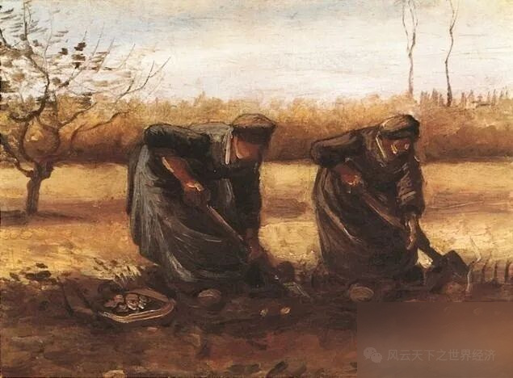
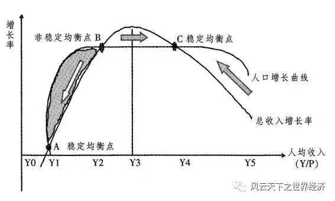
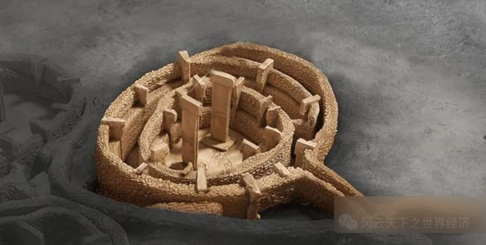

写下这些文字的是我《世界经济史》课堂上聪慧的同学们 ， 而这个系列早在2014年首次开课时就已预约。 八年后当她以如此风姿脱岫而出时， 我体会到了信念被兑付后的小欣喜。 深沉的经济史与年轻的思考在这里相遇， 激荡出灵动的弦歌， 以及渐次苏醒的思想。 为这个“小风云”系列， 我特意选了“总有人正年轻”这样一个名字。 其含义正如你所料， 这门课虽然以史为名， 但是我们真正寄予其中的是未来。 一万两千年世界经济史风云浩荡， 恰似过去留给我们的一个巨大谜面。 关于人类财富增长秘密的蛛丝马迹隐没其中， 等待年轻的他们去破解。 ——鲁晓东
农业革命意味着人类生活由原本居无定所的狩猎采集到定居下来的饲养种植。虽然对于农业革命学者们看法不一，但无法否认的是，今天的一切与农业革命都有着密不可分的关系。那么如果没有农业革命，世界又会是怎样的呢？

梵高作品：两个挖土豆的农妇
首先我们需要明确，这种假设意味着狩猎采集的生活方式没有被饲养种植所替代，我们不否认狩猎采集延续下去会产生适应环境和发展的变化，只是假设这种变化并不会向饲养种植的方向进行，狩猎采集仍然是人们维持生计的来源。在这种假设下，我将该问题分解为两个部分：现在出现的哪些变化，是农业革命导致的，这些变化将不会出现，其他变化仍然会发生；狩猎采集的发展会带来哪些不同于现在的变化，这些变化会因为没有饲养种植的阻碍而出现。我们不讨论这种变化是否有利于人类生活进步与发展，只讨论它是否会出现。
农业革命带来的最大的变化是人口的增长，人口增长也是农业革命带来的很多变化出现的根本原因。在获得技术进步之前，人们长期为马尔萨斯陷阱所困扰，人口增长速度超过了农业产出的增长，导致每一次大规模的经济增长都是伴随着人口减少，而这种减少大多是由战争、疾病等非文明的方式实现。同时，当农业产出难以满足增长的食物需求时，资源分配问题变得尤为突出。

马尔萨斯陷阱
戴蒙德认为富集的食物资源贮存导致了深深的阶级鸿沟，而在人口增长后食物供给不足时，分配的不公又进一步导致了阶级鸿沟的加深。这些无疑是农业革命带来的人口增长直接导致的。在狩猎采集的生活方式之下，人们仅采集所需的食物供给，人口数量则会维持相对稳定。当食物供给不足时，人们会通过迁徙获得新的食物源而非主动或被动的人口减少来维持经济生活稳定。因此，如果没有农业革命的出现，战争、疾病以及阶级鸿沟等被我们认为是非文明的现象也不会出现。
但是，相比于这些非文明现象，人们更加关心技术进步——这种被大多数人视为人类文明与进步的象征，是否与农业革命有关。工业革命被认为是科技革命的开端，用机器化生产取代了手工劳作后，生产效率大幅提高，人们摆脱了马尔萨斯陷阱的困境，进而用科技创造了我们今天看到的众多现代化文明。
那么我们只需要思考，没有农业革命还是否会出现工业化，狩猎采集的发展能否代替工业化引发技术变革。
奇波拉在《欧洲经济史》中计算出了农业劳动生产率水平和工业水平之间存在强烈的正相关关系。而工业化动力来源即是提高粮食产量以满足日益增长的人口需要，在狩猎采集的生活方式下，人们基本食物需求能够得到满足，虽然可能会出现有利于狩猎的技术进步，但不会出现像工业化这样大规模的技术变革。一方面，生计满足让人们缺少变革的动机，另一方面四处迁徙的人们不会停下步伐研究规律获得科技，也难以通过与其他人大量的思维碰撞获得灵感。这表明如果没有农业革命，代表现代文明的技术进步难以大规模实现，现在的现代化生活不会出现在狩猎采集的生活中。
那么狩猎采集的发展又会为我们带来哪些为饲养种植阻碍的变化呢？我们可以从布须曼人——这一现存的采用狩猎采集生活方式的土著民族中获得一些参考。他们生活在最贫瘠的荒漠地区，却能从野外的狩猎采集中获得充足的的水和食物，有充足的闲暇时光创造出了千年不褪的岩壁画。如果将这一小区域的生活推广至资源更为丰富生活条件更加适宜的世界其他地区，最大的变化在于人们可以获得更为闲适的生活状态，有充分的时间去享受自然的馈赠而非如现代人一般在竞争中夺取有限的资源。
布须曼人
戴蒙德和赫拉利均认为，采集者的文明程度和文化的复杂程度都被低估了。我认为，相比于现代文明，狩猎采集创造的文明会是大众文明与小众文明的区别。我们现代的艺术文明，大多由少数上层天才创造，说起绘画我们总是想起毕加索达芬奇，音乐则是贝多芬莫扎特，很少有哪些耳熟能详的艺术瑰宝是由群体所作。可以说是大众的生产劳作为少数人创造了产出艺术文明的时间，他们不必从事生产劳作，将自己的才华毫无保留地用于艺术创作，才有了今天我们引以为傲的艺术文明。但狩猎采集的人群，一方面大家都能在获取食物维持生计外获得闲暇时光用于创作，另一方面无阶层带来的知识能力差距人们更容易在创作中实现合作。
从狩猎采集者创作的大型雕刻壁画以及巨大的哥贝克力石阵来看，如果没有农业革命，世界上的艺术文明代表会偏向于大型由大众创造的艺术作品，我们难以在艺术价值上比较它们与现在的艺术作品，但至少它们的规模会是十分惊人的。

哥贝克利石阵
当然，我们所做的所有猜想都是基于一个并不成立的基本假设——如果没有农业革命。在现实世界中，我们既需珍惜农业革命带来的一切进步与美好，在推动社会文明进步中实现自我价值，又能认清狩猎采集社会的价值和意义，并从中反思自我，尽力减少现代社会中的不文明因素，这便是这种假设存在的价值吧。